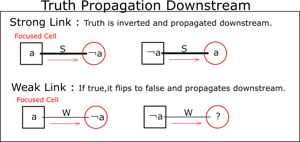
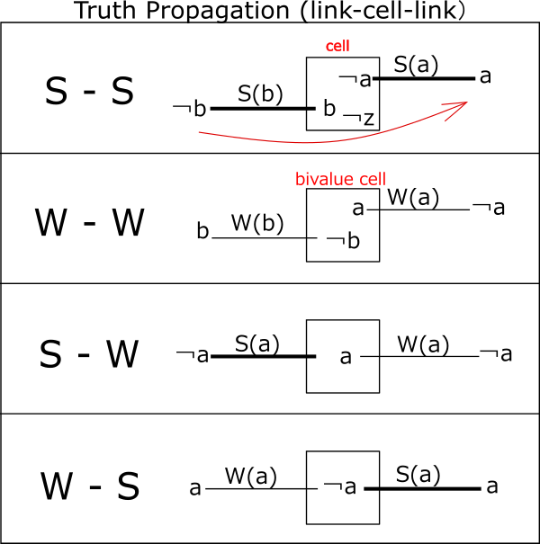
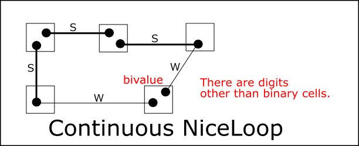
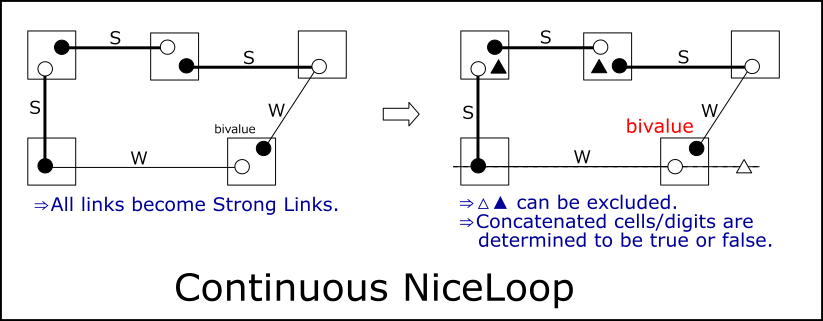
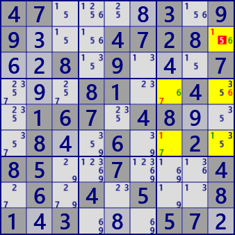
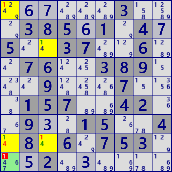
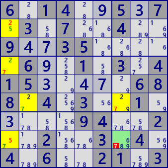

NiceLoop
NiceLoop is an analysis algorithm that connects strong and weak between cells to create a loop.
(1) Link connection
Focus on cell and a link.
For Strong-Link, determining the true/false of dijit #a in a cell determines the false/true of dijit #a at the other end of the link.
For Weak-Link, when digit #a is true, the other end of the link determines digit #a to be false,
With Weak-link, false does not propagate the truth of the link.
In the following, Strong-Links are represented as S, and Weak-Links as W.

(2) Link connection
Analysis algorithms can be configured by link concatenation.
There are the following 3 patterns (4 patterns including directions) for the combination of 2 links that connect to the cell.
In addition, the following conditions must be met in order for the link concatenation constraint to propagate.
- Link connection condition
- S-S : The digits on the links are different
- W-W : The cell is bivalue, the digits of the link is different.
- S-W,W-S : Link digits are the same
If you constrain ￢b,b,￢a,a (￢:not) in order from the top on the link that flows in from the left, the constraint will be transmitted to the link that flows out to the right.
Note that we assume that the inflow is from the left, but make sure that the constraint propagates even if the inflow is from the right. That is, a connection that satisfies the link connectivity condition is bidirectional.

(3) Continus NiceLoop
Creates a link chain from origin cells that satisfy link connection conditions.
A state in which the link connection condition is satisfied even at the origin cell is called a Continuous Loop.
In a continuous loop, the starting cell is no longer meaningful and all cells on the loop have equal properties.

In the continuous loop, cell digits are classified into two types (○ and ● in the figure below).
Make sure this classification is consistent with strong-weak link relationships.
Digits classified into two types, one is true and the other is false.
However, it cannot be determined which is true.
Since both ends of a link are always true and false, a weak link will have the same properties as a strong link.
At this time, the cells/digits that breaks the loop is Locked.
Cells and digits outside the loop and within the same house (△ in the figure below) can be excluded.
Also exclude the "non-looping digits" (▲) in cells where two Strong-Links are connected.
If these (△ and ▲) are true, ○ and ● in the continuous loop will be false at the same time.That is, △ and ▲ are locked.

(4) Discontinus NiceLoop
Creates a link chain from origin cells that meet the link connection conditions.
A state in which the link connection condition is not satisfied at the origin cell is called a Discontinuous Loop.
So the original cell looks like this:
- Link discontinuity condition
- S-S : Link digits are the same
- W-W : Link digits are the same
- S-W、W-S : Link digits are different
The candidate digit for the starting cell is determined as follows.
- S-S : Link digits are the same ⇒ Confirmed as "a"
- W-W : The cell is bivalue and the link digit "a" is the same ⇒ Confirmed as "not-a"
- S-W、W-S : Link digits are different ⇒ (Weak link digit "b") Confirmed as "not-b"
(5) NiceLoop Sample

Nice Loop(Continuous)
rc:r2c9=1=[r6c9]-1-[r6c7]-7-[r4c7]-6-[r4c9]=6=[r2c9]
r2c9#5 is false
Nice Loop(Continuous)
rc:r1c6-6-[r9c6]-7-[r4c6]-1-[r4c9]-8-[r2c9]=8=[r2c4]-8-[r1c6]
r6c6#7 r3c4#8 r6c9#8 is false

Nice Loop(Discontinuous)
rc:r9c1-1-[r1c1]=1=[r3c3]-1-[r8c3]-4-[r8c1]-1-[r9c1]
r9c1#1 is false

Nice Loop(Discontinuous)
rc:r8c7-7-[r8c1]-5-[r2c1]-2-[r4c1]-7-[r6c2]=7=[r6c7]-7-[r8c7]
r8c7#7 is false
Paste the next 81 digits onto the grid and solve with /Solve/MultiSolve/
47....3.99...4728...8.9...7...81..4..167.48...8..6..2.85..7...4.6.4.5..81.3...57.
47....5.92...7361...3.9...7...56..9..613.47...5..2..6.52..3...6.3.1.2..51.9...24.
......3...385.1.4.5..37..6..76..389...9...7...157..42..9..15..4.8.6.753...2......
6.14..5.7.3.7..4..9..35.....6..1.3.415.....688.4.3..1.....94..2..2..3.4.4.6..21.3
(6) NiceLoopm Analysis Algorithm
NiceLoop algorithm uses cell links. NiceLoop analysis works like this:
- First prepare the Cell-Links.
Next, prepare the control (1) size setting, (2) target cell setting, (3) target number setting,
(4) first link setting, and (5) stack for saving results.
Call the function (_NL_Search) that does the actual search.
Size is the length of the cell column.
- The search function is a recursive function.
- First, check if the order has been reached. If so, we will return immediately.
- If the degree is not reached, extend one link from the current position.
An extended link is a link that
satisfies the link connection condition from the previous link (and the current position).
- Exclude already used cells when extending links.
- If the target cell is reached when the link is extended,
it is checked whether the condition is satisfied as a solution of Niceloop.
It also determines whether it is a continuous loop or a discontinuous loop.
- If loops are continuous,
consider exclusion to turn weak links into strong links and exclusion of S-S cells.
- If loops are Discontinuous, examines the excluded digits in cells.
- If there are digits that can be excluded, it's a niceloop solution.